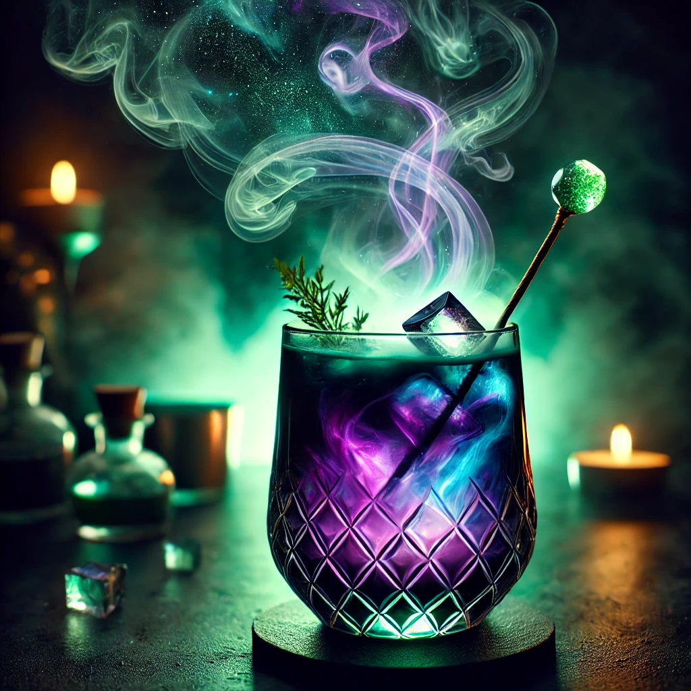

THE BUSTY MERMAID

Dreamweaver's Delight
Ingredienser og Oppskrift:
Ah, Dreamweaver's Delight – en drink som kan få selv den mest hardbarkede piraten til å sette ned sværdet og sveve bort på en sky av drømmer. Denne mystiske og fortryllende drinken har en farge så dyp og virvlende, den ser ut som et skjult skattkammer fra den andre siden av sjøen.
Så, hva er i denne magiske brygget? Her er oppskriften på å skape litt eventyr i et glass:
- 1 del **sølvrom** (når du er ute på de åpne havene, har du alltid rom på lager!)
- 1 del **blå curacao** (for å gi den den havblå magien)
- 1 del **limejuice** (for å få vinden til å blåse friskt gjennom håret ditt)
- 1 del **ananasjuice** (som en tropisk bris på en solrik dag)
- Et dash **mynteblad** (for å bringe den forfriskende sjøluften inn i smaken)
- En liten skvett **søt grenadin** (for å legge til et snev av magi som får solen til å danse på bølgene)
Hvordan lage denne drinken:
- Fyll et glass med isbiter, og tøm alle ingrediensene i en shaker.
- Rist det hele som en storm på åpent hav, og kast eventuelle bekymringer bort.
- Sil drinken i et vakkert cocktailglass og topp med en frisk myntekvist.
- Skål for eventyret ditt og vær klar for en reise gjennom de magiske bølgene!
OBS: Denne drinken er kjent for å føre til spontane dansing på bordene og påfølgende eventyr – drikk ansvarlig, men eventyrlig!